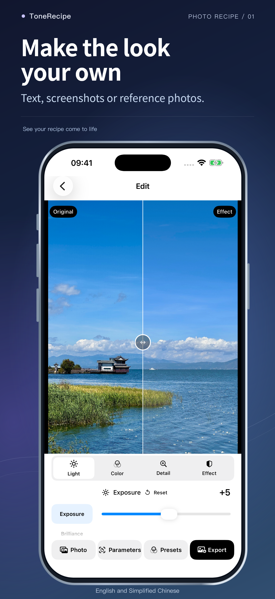
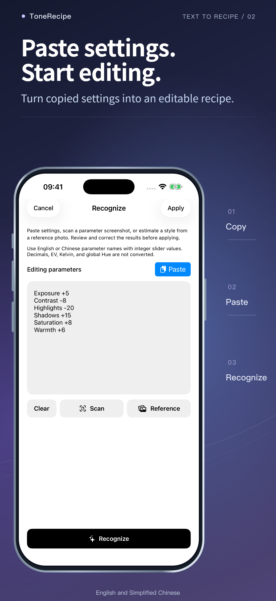
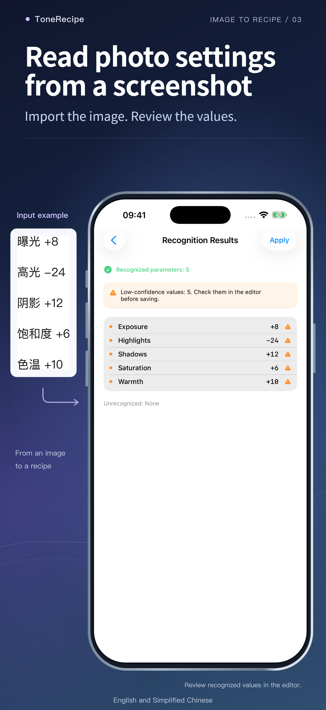

ToneRecipe
Reuse photo editing settings from screenshots
Paste editing settings and check the recognized values.
Download on the App StoreiOS 17+ · English and Simplified Chinese.



Make it part of your day
01
Paste editing settings and check the recognized values.
02
Read parameter screenshots on your device.
03
Use a reference photo as an approximate starting point.
04
Fine-tune, compare, save presets and export JPEG, HEIC or Live Photos.
What to expect
Reference matching estimates a starting recipe, not the original settings or an identical result. Decimal, EV and Kelvin values are not automatically converted to integer sliders.
Free access and purchases
Try recognition, editing and presets for free, with five successful image exports per calendar month. A one-time lifetime purchase removes the export limit. No recurring subscription. See the in-app Apple purchase sheet for the local price.